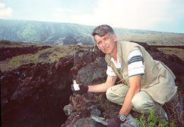

Photos from the Field with Forrest Mims
UV-B meter, EPA Brewer Spectrophotometer 1
UV-B meter, EPA Brewer Spectrophotometer 2
Measuring solar UV-B In Hawaii 1
Measuring solar UV-B In Hawaii 2

Forrest Mims has measured solar UV-B annually in Hawaii since 1992. Here he retrieves a tiny computer which automatically records UV-B for up to several days. The gloves protect his hands from the sharp lava.
Photo Copyright © Forrest Mims
Haze-SPAN
, A project of the
Concord Consortium
Copyright © 1997. All rights reserved.
Last updated: 18-Apr 1997: http://www.concord.org/haze/newsphoto3.html
Questions about Haze-SPAN:
carolyn@concord.org
| about this site:
webmaster@concord.org